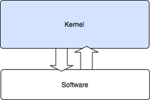

Operacijski sustavi se prema vrsti jezgre dijele na:
Kod monolitne jezgre se cijela jezgra izvršava u jezgrinom prostoru i to upravo u nadglednom načinu rada. Glavna mana ovakvog pristupa je prvenstveno problem da greška u bilo kojem dijelu ovakve jezgre najčešće utiče na pad cijelog sustava, budući da sve komponente nužno vjeruju jedna drugoj. Poznatiji primjeri monolitnih jezgri su: Linux, BSD jezgre, Solaris, DOS, većina Unix jezgri kao i Windows jezgra. (Korunić 2007.)
Mikrojezgra je sa druge strane jezgra minimalističkog dizajna: aplikacijama se pružaju tek najosnovnije nužne usluge (odnosno sistemski pozivi), a to su već spomenuto upravljanje adresnim prostorom, vremenskim prekidima, dretvama (engl. threads) pojedinog procesa te komunikacijom među procesima. Sve ostale dodatne usluge poput grafičkih sučelja, mrežnog stoga i sl. su implementirane u korisničkom prostoru u vidu posebnih servisa (engl. servers). Primjeri mikrojezgri su također prisutni u modernim operacijskim sustavima: Minix, AmigaOS, Mach (GNU Hurd, XNU odnosno Mac OS X), QNX, L4 obitelj, Symbian OS, Singularity. (Korunić 2007.)